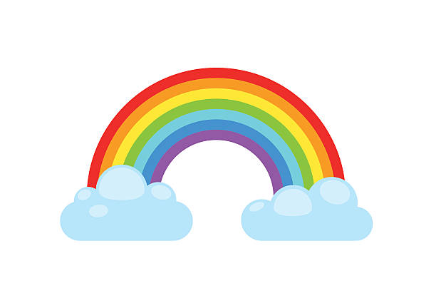

- I said hi to the ocean and it didn't say hi back, it just waved.

-
Whats Switzerland but hot?
SWEATzerland!
- What food always photobombs?
CHEESE!
-
What do you call a diosaur thats sleeping?
A dinoSNOOR!
- What do you call a booklovers virus?
A bookgerm!
- What was the rainbows name?
Roy GBP!

- What plant is a crimanal?
Palm Fraud.
- Why did the corn go to the docter?
It's ear was hurting!